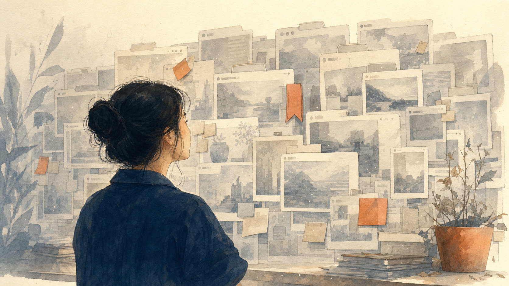
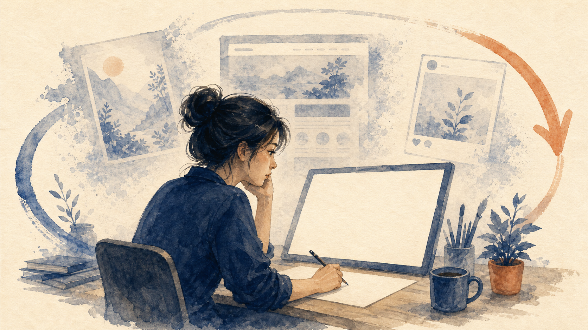

Esc/G grid · S sidebar · N notes · F full · ↑↓ nav
BUỔI 3/3 · CÔNG TY MỘT NGƯỜI
Tối nay: studio của bạn lớn thành một vault — nhớ được và làm được.
Hai buổi trước bạn làm ra một thứ, rồi bán được một thứ. Tối nay mình làm cho cái đó tự nhớ và tự chạy phần việc lặp đi lặp lại.
Buổi 1 bạn dựng được một studio làm ra deck. Buổi 2 bạn bán được nó bằng nút trả tiền thật. Tối nay mình không đổi món mới — mình làm cho chính cái studio đó lớn lên thành một cái vault: nó nhớ bạn là ai, và nó làm được việc cho bạn.
GẶP HẰNG
Đây là Hằng. Tối nay tụi mình học bằng câu chuyện của Hằng.
Hằng làm marketing 8 năm cho mấy công ty công nghệ và bán lẻ. Vừa nghỉ việc, ra làm riêng — một mình. Giờ Hằng nhận tư vấn và dạy lại nghề cho mấy bạn mới vào marketing.
Mình không nói lý thuyết suông. Mình kể chuyện một người. Hằng có thật về mặt tình huống — tám năm trong nghề, giờ một mình ra làm riêng, vừa nhận tư vấn vừa mở lớp dạy lại nghề. Cả tối nay mình sẽ đi theo Hằng.
HẰNG MUỐN GÌ
Hằng muốn mở workshop đều đặn — mà không kiệt sức làm lại từ đầu mỗi lần.
Mỗi lần mở một đợt mới, Hằng lại ngồi nghĩ lại từ đầu: đặt tên, viết mô tả, dựng trang đăng ký, viết bài mời. Làm hoài một việc, mệt hoài.
Đây là điều Hằng muốn, nói cho gọn: mở lớp đều đặn mà không phải gồng. Vấn đề là mỗi đợt mới, Hằng làm lại gần như từ con số không. Cái đó không bền — và đó chính là cái tối nay mình sửa.
NHỚ ĐIỀU NÀY
Hằng chỉ là một ví dụ. Lát nữa mình sẽ cho bạn thấy: đổi Hằng thành BẠN, cả cái vault tự đổi theo.
Cái máy không gắn chặt với Hằng. Cùng một cái vault, mình thả thông tin của bạn vào, là nó dựng lại cho đúng nghề của bạn. Cuối buổi mình sẽ làm thật điều này trước mặt bạn.
Cái này quan trọng, bạn ghim lại giùm mình: Hằng chỉ là một cái ví dụ để dễ kể. Điều mình muốn bạn thấy là cái máy bên dưới — nó không thuộc về riêng Hằng. Cuối buổi mình sẽ copy nguyên cái vault này, thả thông tin của BẠN vào, và nó tự dựng lại cho nghề của bạn. Nhớ cái lời hứa này, cuối buổi mình trả.
MỘT MÌNH NGHĨA LÀ
Một mình nghĩa là Hằng vừa là marketing, vừa là sale, vừa là người dựng trang, vừa là người nhớ mọi thứ.
Công ty lớn có nhiều phòng ban chia việc. Công ty một người thì một cái đầu gánh hết — nên cái gì lặp lại mà không có hệ thống, là đuối.
Khi mình nói "một mình", nó nặng hơn nghe. Hằng là người chạy nội dung, cũng là người chốt sale, cũng là người dựng trang đăng ký, cũng là người duy nhất nhớ hết mọi thứ trong đầu. Công ty lớn chia việc cho nhiều phòng ban. Công ty một người thì một cái đầu ôm hết. Nên việc gì lặp đi lặp lại mà không có hệ thống đỡ, là kiệt sức.
BỐN CHỖ KẸT
Hằng kẹt ở bốn chỗ. Bạn coi thử có thấy mình trong đó không.
Không phải Hằng lười. Hằng làm nhiều là khác. Vấn đề nằm chỗ khác — mình đi qua từng cái.
Trước khi nói cách sửa, mình kể bốn chỗ Hằng đang kẹt. Vừa nghe vừa soi lại mình nha — mình đoán bạn dính ít nhất hai cái. Và nhớ: đây không phải chuyện lười.
CHỖ KẸT 1
Ghi chú, link hay, ý tưởng — lưu hết mà để đó, không quay lại thành việc.
Hằng hay coi mấy talk, podcast về marketing, thấy hay là lưu link lại định "đọc sau". Rồi để đó. Cả kho lưu trữ mà không cái nào quay ra thành bài đăng, thành buổi học, thành tiền.

Chỗ kẹt thứ nhất, ai cũng dính: mình lưu rất nhiều mà không cái nào quay lại thành việc. Hằng coi talk hay, lưu link, định đọc sau, rồi quên. Kho càng đầy càng nặng đầu, mà chẳng ra được cái gì giao cho khách. Ghi chú chết vì nó chỉ có một chiều: chiều đi vào.
CHỖ KẸT 2
Mỗi lần nhờ AI, Hằng phải kể lại từ đầu mình là ai, bán cái gì.
Mở AI lên, gõ một câu, là phải dán lại: "mình tên Hằng, làm marketing, dạy người mới, giọng mình thế này…". Lần nào cũng kể lại. AI không nhớ Hằng là ai.
Chỗ kẹt thứ hai: AI không nhớ bạn. Mỗi lần nhờ nó làm gì, bạn phải kể lại từ đầu mình là ai, bán gì, giọng mình ra sao. Một lần thì không sao. Làm hoài mỗi ngày thì mệt — và kết quả nó ra cứ chung chung, vì nó đâu có biết bạn.
CHỖ KẸT 3
Lúc hăng, Hằng dễ viết quá tay — kiểu "cam kết tăng lương" — rồi tự bắn vào chân.
Khi viết bài bán hàng, đang phấn khích, dễ phóng đại: hứa điều chưa làm được, ghi con số chưa có thật. Nghe mạnh lúc đó, nhưng là tự gài bẫy mình.
Chỗ kẹt thứ ba tế nhị hơn. Lúc viết bài bán hàng, đang hăng, mình dễ viết quá tay — hứa "cam kết tăng lương", ghi "200+ học viên" trong khi lớp đầu tiên còn chưa khai giảng. Nghe mạnh thiệt, nhưng đó là tự bắn vào chân: khách tin rồi không đúng là mất uy tín. Một mình thì không có ai cản mình lại.
CHỖ KẸT 4
Mỗi lần mở một đợt mới, Hằng làm lại gần như từ đầu.
Đợt trước đặt tên gì, mô tả ra sao, trang đăng ký thế nào — nằm rải rác, không gom thành một quy trình. Nên đợt sau lại dựng lại từ con số không.

Chỗ kẹt thứ tư là cái Hằng ghét nhất: mỗi đợt workshop mới, cô làm lại gần như từ đầu. Việc đợt trước không gom thành quy trình để xài lại, nên đợt sau dựng lại từ số không. Đó là chỗ tốn sức nhất mà lẽ ra khỏi tốn.
VẤN ĐỀ THẬT
Bốn cái này không phải vì thiếu chăm. Là vì thiếu một cái HỆ THỐNG khép vòng.
Hằng làm rất nhiều. Cái thiếu là một chỗ để mọi thứ chảy thành vòng: ghi vào → thành note → thành sản phẩm → bán → học lại → tốt lên. Thiếu cái vòng đó, càng làm càng đuối.
Gom lại: bốn chỗ kẹt không phải tại Hằng lười — cô làm nhiều là khác. Cái cô thiếu là một hệ thống khép vòng: đồ ghi vào thì chảy ra thành sản phẩm, bán xong thì học lại để lần sau tốt hơn. Thiếu cái vòng đó, mọi nỗ lực rớt ra ngoài. Phần còn lại của buổi là mình dựng cái vòng đó.
GIẢI PHÁP · PHẦN 1
Tin vui: bạn đã biết cách sắp xếp đúng rồi. Người ta đặt tên cho nó hết rồi.
Có ba cách sắp xếp ghi chú đã được kiểm chứng nhiều năm. Mình điểm nhanh, vì cái đáng tiền tối nay không phải ba cái này — mà là chỗ cả ba cùng hụt.
Trước khi tới cái mới, mình trấn an bạn một câu: bạn không dốt chuyện sắp xếp. Người thông minh đã nghĩ ra ba cách đúng từ lâu. Mình đi nhanh qua ba cái, rồi chỉ cho bạn chỗ cả ba cùng có một lỗ.
BA CÁCH ĐÃ CÓ
CODE, PARA, Zettelkasten — ba cách sắp xếp, ba ý đơn giản.
CODE: đẩy ghi chú đi tới tận sản phẩm. PARA: xếp đồ theo việc mình sắp làm. Zettelkasten: mỗi ý một note nhỏ, rồi nối các note lại thành mạng lưới. Chỉ vậy thôi.
Ba cái tên nghe kêu nhưng ý rất đơn giản. CODE là đẩy ghi chú đi tới tận output, đừng để nó nằm im. PARA là xếp đồ theo việc sắp làm chứ không theo chủ đề. Zettelkasten là mỗi ý ghi một note nhỏ rồi nối chúng lại. Bạn Google năm phút là hiểu — nên mình không dạy lại.
BẤM THỬ
Bấm thử: ba cách, ba hình dạng thật khác nhau.
Không phải ba cái tên na ná. Mỗi cái là một hình dạng riêng, sửa một bệnh riêng. Bấm từng tab để thấy. (Phím 1 · 2 · 3 để chuyển nhanh.)
Ghi chú
→
Chắt
→
Sản phẩm
Sửa bệnh: ghi chú nằm im, không bao giờ thành cái giao cho khách. CODE đẩy ghi chú đi tới tận sản phẩm.
Dự án
Lĩnh vực
Tài nguyên
Lưu trữ
Sửa bệnh: đồ để lộn xộn, tới lúc cần không biết tìm ở đâu. PARA xếp đồ theo việc mình sắp làm.
Sửa bệnh: ý tưởng rời rạc, không nối lại được để bật ra ý mới. Zettelkasten: một ý một note, nối link lại với nhau.
Bấm thử ba tab cho khán giả thấy ba hình thật khác nhau, không phải ba cái tên giông giống. CODE là đường ống chảy tới output. PARA là bốn cái thùng xếp theo việc. Zettelkasten là mạng lưới note nối nhau. Ba bệnh khác nhau, ba hình khác nhau. Bấm phím 1, 2, 3 để chuyển nhanh khi đang nói.
CHỖ CẢ BA CÙNG HỤT
Cả ba đều đúng. Mà cả ba cùng một lỗ: chúng chờ BẠN tự kỷ luật.
Cả ba giả định bạn đủ kiên trì để làm hoài: chắt note đều đặn, dời folder mỗi khi xong việc, nối link mọi lúc. Mà không ai làm nổi mãi. Nên kho của ai rồi cũng thành bãi rác — bất kể chọn cách nào.
Đây là chỗ không sách nào nói thẳng: ba cách đều giả định bạn đủ kỷ luật làm hoài. Mà người thật thì không. Không ai chắt note đều mỗi ngày, không ai dời folder khi xong project, không ai nối link mọi lúc. Nên "bộ não thứ hai" của ai rồi cũng thành bãi rác, dù chọn cách nào. Lỗi không nằm ở ý tưởng — nằm ở chỗ nó là việc tay, mà việc tay thì người ta bỏ.
GIẢI PHÁP · PHẦN 2
Vậy lời giải là gì? Một cái vault — nhìn ở hai tầng.
Tầng 1 là cái thân: nó được sắp xếp thế nào, và dữ liệu chảy ra sao. Tầng 2 là cái đầu: Claude đọc cái thân đó rồi làm việc. Mình đi từng tầng.
Giờ tới cái mới. Câu trả lời cho cả bốn chỗ kẹt là một cái vault. Nhưng mình giải thích nó ở hai tầng, vì nếu chỉ nhìn folder thì bạn hiểu sai. Tầng một là cái thân — cấu trúc và dòng chảy. Tầng hai là cái đầu — Claude điều khiển cái thân đó. Đi từng tầng cho rõ.
TẦNG 1 · CẤU TRÚC
Vault gồm bốn phần: bạn là ai, việc làm theo bước, sản phẩm, và bài học rút ra.
Bạn là ai — bán gì, giọng văn ra sao, có bằng chứng gì. Việc làm theo bước — những việc làm đi làm lại, ghi rõ từng bước. Sản phẩm — đồ bán và tài sản dùng lại được. Bài học — rút kinh nghiệm sau mỗi lần làm. Bốn phần, đủ cho một công ty một người.
Tầng một, cấu trúc. Vault chỉ có bốn phần thôi cho dễ nhớ. Phần một, bạn là ai: bán gì, giọng ra sao, có bằng chứng gì. Phần hai, việc làm theo bước: việc nào làm hoài thì ghi rõ từng bước. Phần ba, sản phẩm: đồ bán và đồ dùng lại được. Phần bốn, bài học: làm xong thì rút kinh nghiệm. Bốn phần đó là đủ cho một người làm một mình.
TẦNG 1 · BẢN ĐỒ
Trên máy, bốn phần đó là mấy thư mục có đánh số.
Đánh số để Claude (và bạn) biết cái nào quan trọng trước. Bạn không cần nhớ tên — chỉ cần biết mỗi thư mục ứng với một phần.
00-foundation
Bạn là ai
10-playbooks
Việc làm theo bước
20-products + 40-artifacts
Sản phẩm + tài sản dùng lại
50-reviews
Bài học rút ra
60-people
Khách (ai đã mua)
90-inbox
Hộp nhận (đồ mới ghi vào)
Trên máy, bốn phần đó hiện ra là mấy thư mục có đánh số đầu. Đánh số để biết cái nào đứng trước: nền tảng số 00, playbook số 10, sản phẩm 20 và 40, rút kinh nghiệm 50. Thêm hai cái phụ: 60 là khách đã mua, 90 là hộp nhận đồ mới ghi vào. Bạn khỏi học thuộc — chỉ cần hiểu mỗi thư mục là một phần.
TẦNG 1 · DÒNG CHẢY
Điều quan trọng nhất: dữ liệu CHẢY thành một vòng, không nằm im trong tủ.
Một cái link bạn lưu vào hộp nhận, chắt lại thành note, nối vào phần "bạn là ai", lớn thành sản phẩm, mở một đợt bán; khách mua thì ghi vào phần khách; xong rồi rút kinh nghiệm để lần sau làm tốt hơn. Hết một vòng.
Đây là ý quan trọng nhất của cả tầng một, nghe kỹ giùm mình. Folder không phải cái tủ đứng yên. Dữ liệu chảy thành một vòng. Một cái link rớt vào hộp nhận, mình chắt nó thành một note, nối note đó vào phần "mình là ai", nó lớn dần thành một sản phẩm, mình mở một đợt bán; khách mua thì tên họ vào phần khách; bán xong mình rút kinh nghiệm, ghi lại để đợt sau sắc hơn. Đó là một vòng kín — đó là cái Hằng đang thiếu.
TẦNG 1 · VÒNG KHÉP KÍN
Vẽ ra thì nó là một vòng tròn, không phải một hàng thẳng.
Mỗi mũi tên là một bước có thật. Quan trọng là cái mũi tên cuối quay ngược về đầu: bài học vòng này làm vòng sau tốt hơn.
Hộp nhận
→
Note
↓
↓
Khách mua
←
Đợt bán
↑
Sản phẩm
↑
Bài học
↻
Bạn là ai
Bài học ↻ quay về làm việc tốt hơn lần sau
Vẽ ra cho dễ thấy: nó là một vòng, không phải một hàng thẳng rồi hết. Đồ vào hộp nhận, thành note, nối vào hồ sơ bạn là ai, lớn thành sản phẩm, mở đợt bán, khách mua, rồi rút kinh nghiệm — và cái rút kinh nghiệm đó quay ngược về làm cho playbook lần sau tốt hơn. Cái mũi tên quay về đó chính là chỗ hệ thống tự khá lên.
TẦNG 2 · BỘ NÃO
Nhưng thư mục chỉ là giấy tờ nằm im. Claude mới là cái đầu đọc nó rồi LÀM.
Tầng 1 dù gọn cách mấy, tự nó không làm gì. Phải có một cái đầu đọc được cấu trúc đó rồi biến nó thành việc. Cái đầu đó là Claude.
Tới tầng hai. Mình nói thẳng: bốn cái folder đẹp cách mấy, tự nó vẫn là giấy tờ nằm im. Nó không tự viết email, không tự dựng landing. Phải có một cái đầu đọc cấu trúc đó rồi làm. Cái đầu đó là Claude. Tầng một là cơ thể, tầng hai là bộ não.
TẦNG 2 · CÔNG CỤ
Claude không làm một mình — nó cầm theo mấy công cụ, mỗi cái một việc.
Một dòng cho mỗi cái, để bạn biết khi nào gọi cái nào.
Claude (bộ não)
Figma
để thiết kế hình ảnh, giao diện.
NotebookLM
để nghiên cứu mà có trích nguồn rõ ràng.
cmux
để chạy nhiều việc cùng lúc, song song.
qmd
để tìm trong vault của bạn tức thì.
Codex
để dựng mấy thứ nặng, nhiều bước.
Claude không làm tay không. Nó cầm theo mấy công cụ, mỗi cái một việc rõ ràng. Figma để thiết kế. NotebookLM để nghiên cứu có trích nguồn đàng hoàng. cmux để chạy nhiều việc song song. qmd để tìm trong vault của bạn ngay lập tức. Codex để dựng mấy thứ nặng nhiều bước. Bạn không cần thuộc hết — chỉ cần biết bộ não có sẵn mấy cánh tay này.
TẦNG 2 · CHỐT LẠI
Tầng 1 là cơ thể. Tầng 2 là bộ não. Thiếu não, vault chỉ là folder. Có não, nó tự làm việc.
Đây là chỗ khác nhau giữa "một đống thư mục gọn gàng" và "một cái vault biết làm việc cho bạn". Cùng một cấu trúc, khác nhau ở chỗ có cái đầu điều khiển hay không.
Chốt tầng hai bằng một câu cho bạn nhớ: tầng một là cơ thể, tầng hai là bộ não. Thiếu bộ não thì vault chỉ là mớ folder gọn gàng — đẹp mà vô dụng. Có bộ não thì chính mớ folder đó tự đứng dậy làm việc cho bạn. Khác biệt nằm ở cái đầu, không nằm ở folder.
GIẢI PHÁP · PHẦN 3
Giờ mình lái thử trên chính vault của Hằng — coi điều gì xảy ra.
Bốn bậc, từ dễ tới mạnh. Mỗi bậc mình nói trước nó làm gì, rồi chuyển qua màn hình lái thật, rồi quay lại coi nó ra cái gì.
Đây không phải "demo cho đẹp". Mình lái thật trên vault của Hằng để bạn thấy điều gì xảy ra. Bốn bậc, mỗi bậc mạnh hơn bậc trước. Cách mình làm: nói trước nó sẽ làm gì, chuyển qua Claude Desktop lái sống, rồi quay lại slide coi kết quả. Bắt đầu từ cái dễ nhất.
BẬC 1 · GHI LẠI (SETUP)
Bậc 1 — mình gõ "lưu cái talk này", coi nó ghi kiểu gì.
Bình thường lưu một cái link là nó nằm chết. Ở đây mình muốn coi: nó có chắt thành note nối được vào lưới không, và nó có tự đối chiếu với cái Hằng đang dạy không.
« lưu cái talk này vào vault giùm mình »
coi nó làm gì với cái link
Bậc một, dễ nhất: ghi lại. Mình sẽ gõ "lưu cái talk này vào vault". Cái hay không phải ở chỗ nó lưu — Notion cũng lưu được. Cái hay là coi nó có chắt cái talk thành một note nối được vào lưới, và có tự nói "talk này khác cái chị đang dạy ở chỗ này" hay không. Tức là nó vừa nhớ, vừa biết soi.
BẬC 1 · LÁI THẬT
Mình mở Claude Desktop, coi nó lưu một cái link thành việc.
Cùng nhìn màn hình nha — bạn sẽ thấy nó đọc vault, hiểu Hằng đang dạy gì, rồi tạo note và tự đối chiếu.
[Tony: mở Claude Desktop, tab Code. Gõ câu lưu talk. Để mọi người coi nó đọc vault, hiểu Hằng đang dạy gì, rồi tạo note và tự đối chiếu. Đừng đọc slide nữa, nhìn màn hình.]
BẬC 1 · KẾT QUẢ
Nó không chỉ lưu — nó nối note vào lưới, và nói luôn "talk này khác cái chị đang dạy".
Một thao tác ghi lại bình thường, mà ra hai thứ: một note nối được vào hồ sơ của Hằng, và một câu so sánh với cái Hằng đang dạy. Nó nhớ, và nó soi.
Note talk
ý chính đã chắt lại
→
Hằng
→
khác cái chị đang dạy ở: …
Kết quả bậc một: nó vượt qua "lưu cho có". Nó chắt talk thành note, nối vào lưới của Hằng, và tự nhận ra "cái talk này khác cái chị đang dạy ở điểm này". Mới bậc dễ nhất mà nó đã vừa nhớ vừa soi. Giữ cái cảm giác đó, bậc sau mạnh hơn.
BẬC 2 · VAULT BIẾT CÃI (SETUP)
Bậc 2 — mình cố tình bảo nó viết "200+ marketer, cam kết tăng lương" cho mạnh.
Đây là chỗ kẹt số 3 hồi nãy. Mình thử ép nó phóng đại. Coi nó nghe lời, hay nó cãi lại vì nó nhớ số thật của Hằng.
« ghi cho mình câu bán mạnh: "200+ marketer tin dùng, cam kết tăng lương" »
coi nó có chịu bịa không
Bậc hai là khoảnh khắc à-há của cả buổi, để ý nha. Mình quay lại chỗ kẹt số ba — viết quá tay. Mình cố tình ép nó: "ghi câu bán thật mạnh, 200+ marketer, cam kết tăng lương". Một cái AI bình thường sẽ viết liền vì mình kêu. Coi cái này có chịu bịa không.
BẬC 2 · LÁI THẬT
Giờ mình thử ép nó nói quá lên — coi nó phản ứng sao.
Nhìn kỹ màn hình: bạn sẽ thấy vault từ chối viết câu phóng đại, rồi đề xuất một câu nói thật mà vẫn mạnh.
[Tony: Claude Desktop. Gõ câu ép nó phóng đại. Mọi người coi kỹ phản ứng của nó — chỗ này là điểm nhấn.]
BẬC 2 · KẾT QUẢ
Nó TỪ CHỐI bịa. Vì nó nhớ số thật: mới 4/6 mentee, lớp đầu chưa có ai khen.
Vault nhớ Hằng mới kèm 6 bạn, 4 bạn lên được vị trí cao hơn, và workshop là lần mở đầu nên chưa có lời khen nào. Nên nó không cho ghi "200+". Nó đề xuất một câu thật mà vẫn mạnh: "4 trong 6 bạn mình kèm đã lên vị trí cao hơn trong một năm."
200+ cam kết tăng lương
→
✓ 4/6 bạn mình kèm đã lên vị trí cao hơn trong một năm
Đây, khoảnh khắc à-há: nó không chịu bịa. Vì vault nhớ số thật của Hằng — cô mới kèm sáu bạn, bốn bạn lên chức, còn workshop thì là lần mở đầu nên chưa có ai khen. Nó từ chối ghi "200+ cam kết tăng lương", rồi tự đề xuất một câu vừa thật vừa mạnh: "bốn trên sáu bạn mình kèm đã lên vị trí cao hơn trong một năm". Một cái AI bình thường nịnh bạn. Cái vault này cãi bạn để cứu uy tín bạn. Đó là khác biệt.
BẬC 3 · MỘT CÂU RA SẢN PHẨM (SETUP)
Bậc 3 — mình gõ một câu "mở đợt workshop tháng sau", coi nó dựng được tới đâu.
Nó đã biết Hằng là ai, bán gì, giọng ra sao. Nên mình đoán nó chỉ cần hỏi thêm hai thứ: giá bao nhiêu và ngày nào. Rồi nó tự dựng trang bán + gói chào + nút trả tiền thật.
« mở giúp mình một đợt workshop cho tháng sau »
→ landing
→ gói chào (offer)
→ nút trả tiền thật
Bậc ba cho thấy sức của việc nó nhớ bạn. Mình chỉ gõ "mở đợt workshop tháng sau". Vì nó đã biết Hằng là ai, bán gì, giọng thế nào, nên nó không hỏi lại mười câu — nó chỉ cần hai thứ nó chưa biết: giá và ngày. Rồi từ đó dựng luôn trang đăng ký, gói chào, và nút trả tiền thật.
BẬC 3 · LÁI THẬT
Một câu "mở đợt workshop" — coi nó dựng trang bán được.
Nó sẽ chỉ hỏi mình giá với ngày, rồi tự dựng trang đăng ký và gắn nút trả tiền thật ngay tại đây.
[Tony: Claude Desktop. Gõ câu mở đợt. Khi nó hỏi giá với ngày thì mình nhập. Mọi người coi nó dựng trang và gắn nút trả tiền thật ngay tại đây.]
BẬC 3 · KẾT QUẢ
Một câu, hai thông tin — ra một trang bán có nút trả tiền chạy thật.
Không phải bản nháp để bạn sửa cả buổi. Là một trang đăng ký đúng giọng Hằng, đúng giá, đúng ngày, có nút trả tiền thật. Việc mở một đợt mới — cái Hằng từng phải làm lại từ đầu — giờ gói trong một câu.
Workshop viết offer cho marketer
Giá: 1.500.000đ
Ngày: tháng sau
Trả tiền
thật
Kết quả bậc ba: từ một câu và hai thông tin, ra một trang bán thật, đúng giọng Hằng, có nút trả tiền chạy được. Nhớ chỗ kẹt số bốn không — mỗi đợt mới làm lại từ đầu? Đây là lời giải cho nó. Cái việc tốn sức nhất giờ nằm gọn trong một câu.
BẬC 4 · CẢ DÂY CHUYỀN (SETUP · QUAY SẴN)
Bậc 4 — "ra một buổi chia sẻ miễn phí để kéo người vào workshop." Cả dây chuyền chạy một lượt.
Một câu, nó chạy cả chuỗi: nghiên cứu chủ đề → làm slide → dựng landing → viết bài đăng mạng xã hội. Rồi điều mình thích nhất: xong nó tự chấm điểm lại để lần sau làm sắc hơn.
Nghiên cứu
→
Slide
→
Landing
→
Bài social
→
Tự chấm điểm
↻
đoạn này quay sẵn
Bậc bốn là bậc lớn nhất, và đoạn này mình quay sẵn vì nó chạy hơi lâu để đứng đợi live. Mình gõ một câu: "ra một buổi chia sẻ miễn phí để kéo người vào workshop". Nó chạy cả dây chuyền: nghiên cứu chủ đề, làm slide, dựng landing, viết bài đăng. Và cái mình mê nhất ở cuối: nó tự chấm điểm lại việc vừa làm, ghi vào retro, để lần sau sắc hơn. Đó là cái vòng khép kín hồi nãy, chạy thật.
BẬC 4 · KẾT QUẢ
Cả một chiến dịch nhỏ ra trong một lượt — và nó tự rút kinh nghiệm để lần sau tốt hơn.
Đây là lúc bốn phần của vault chạy cùng nhau: phần "bạn là ai" cho giọng, phần "việc làm theo bước" cho các bước, phần "sản phẩm" cho cái giao ra, phần "bài học" để lần sau khá hơn. Cái mũi tên bài học quay về chính là chỗ hệ thống tự khá lên mà bạn không phải làm gì thêm.
Sản phẩm chung
Bạn là ai
Việc làm theo bước
Sản phẩm
Bài học
→
←
→
←
↻
về việc làm
Kết quả bậc bốn: từ một câu ra cả một chiến dịch nhỏ — nghiên cứu, slide, landing, bài đăng — và quan trọng nhất, nó tự chấm điểm rồi ghi bài học vào retro. Lần sau bạn mở chiến dịch tương tự, nó đã khôn hơn. Đây là lúc cả bốn phần của vault chạy cùng lúc. Đây là cái vòng khép kín, sống thật trước mặt bạn.
TỰ XÂY
Tới đây bạn không chỉ DÙNG được vault — bạn xây được vault của riêng mình.
Mình vừa cho bạn thấy vault của Hằng làm được gì. Giờ mình chỉ cho bạn cái khung để tự dựng một cái cho nghề của bạn.
Phần cuối cùng, và là phần làm bạn khác mọi người: bạn không chỉ xài vault có sẵn, bạn xây được vault của riêng mình. Mình đưa bạn cái khung. Vì không ai hiểu nghề của bạn bằng bạn.
BA TẦNG ĐỂ XÂY
Xây vault có ba tầng: tại sao, cách làm, và tự động hoá cách làm.
Framework — tại sao: sáu năng lực bạn cần, và hai chế độ làm việc. Playbook — cách làm: ghi rõ các bước cho một việc. Skill — tự động hoá: biến cái playbook đó thành một lệnh chạy được.
Framework — tại sao 6 năng lực · 2 chế độ
↓
Playbook — cách làm các bước
↓
Skill — tự động hoá một lệnh
Xây vault có ba tầng, đi từ trên xuống. Trên cùng là Framework — cái tại sao: bạn cần sáu năng lực, làm việc ở hai chế độ. Giữa là Playbook — cách làm: một việc thì ghi rõ các bước. Dưới cùng là Skill — tự động hoá: biến cái playbook đó thành một lệnh để gõ một câu là chạy. Hiểu, ghi, rồi tự động hoá.
TRẢ LẠI LỜI HỨA
Nhớ Hằng chứ? Giờ coi nè — mình đổi Hằng thành BẠN.
Đầu buổi mình hứa: cái máy không gắn chặt với Hằng. Giờ mình copy nguyên cái vault, thả vào một tấm thẻ thông tin của BẠN, và nó tự dựng lại hồ sơ "bạn là ai", nhóm khách, và sản phẩm — cho đúng nghề của bạn.
Đây là lúc mình trả lời lời hứa đầu buổi, và là lúc mạnh nhất của cả tối. Nhớ mình nói Hằng chỉ là ví dụ không? Giờ coi nè. Mình copy nguyên cái vault này, thả vào một tấm thẻ thông tin của bạn — bạn là ai, bán gì — và nó tự dựng lại me, audience, product cho nghề của bạn. Cùng một cái máy, đổi ngữ cảnh thôi. Không phải vault của Hằng nữa. Là vault của BẠN.
ĐỔI HẰNG → BẠN · LÁI THẬT
Thả thẻ của một nghề khác vào — coi cả vault tự dựng lại.
Mình copy vault, thả một thẻ ngữ cảnh mới vào. Bạn sẽ thấy hồ sơ "bạn là ai", nhóm khách và sản phẩm dựng lại cho một nghề hoàn toàn khác — cùng một cái máy.
[Tony: Claude Desktop. Copy vault, thả tấm thẻ ngữ cảnh mới vào. Mọi người coi nó dựng lại hồ sơ cho một nghề hoàn toàn khác — cùng một cái máy. Đây là bằng chứng nó là hệ thống, không phải đồ may riêng cho Hằng.]
BÁN ĐỒ MÌNH → LÀM CHO KHÁCH
Khi bạn lớn từ bán đồ của mình lên làm cho khách — vault không xây lại, nó mọc thêm một nhánh.
Cái gì đổi: từ một giọng thành nhiều giọng (mỗi khách một thư mục riêng), thêm luật không để lẫn khách này sang khách kia, và bộ phận "cãi" sẽ cãi theo đúng cái đã chốt với từng khách.
Bán đồ mình
một giọng
→
Làm cho khách
clients/Khách A một giọng
clients/Khách B một giọng
không rò khách này sang khách kia
Một bước lớn nữa, để bạn thấy nó bền tới đâu. Hôm nay Hằng bán đồ của chính mình. Mai mốt có công ty cũ mời cô về đào tạo nội bộ — giờ cô làm CHO khách. Cái gì đổi? Một giọng thành nhiều giọng, mỗi khách một thư mục riêng. Thêm luật không để thông tin khách này rò sang khách kia. Bộ phận cãi thì cãi theo đúng cái đã chốt với từng khách. Điều hay là: vault không phải xây lại — nó chỉ mọc thêm một nhánh. Đó chính là bằng chứng nó là một hệ thống, không phải một file.
VÌ SAO QUAN TRỌNG
Vault mọc thêm nhánh chứ không xây lại — đó là dấu hiệu của một hệ thống thật.
Một file thì tới lúc đổi việc là bỏ đi làm lại. Một hệ thống thì khi bạn lớn lên, nó lớn theo. Đó là khác biệt giữa "ghi chú" và "vault".
Chốt phần tự xây bằng một câu: cái gì xây lại mỗi lần đổi việc thì là file, vứt đi rồi làm lại. Cái gì lớn theo bạn, mọc thêm nhánh khi bạn đổi nghề, thì là hệ thống. Bạn đang xây cái thứ hai. Đó là lý do nó đáng công.
KẾT · 1
Giờ bạn tự tin hơn rồi. Và bạn tự động hoá được — bằng playbook và retro thật, không phải hứa hẹn.
Mình không bán giấc mơ "một câu chạy cả công ty". Mình bán cái thật: nó làm phần việc lặp đi lặp lại, bạn giữ phần phán đoán. Và mỗi lần làm, retro ghi lại để lần sau tốt hơn.
Gần xong rồi, mình nói thẳng để không bán quá tay. Cái này tụi mình test thật, có người chấm độc lập. Nó không "chạy cả công ty bằng một câu" — đừng tin ai bán bạn giấc mơ đó. Cái nó làm thật là: gánh phần việc lặp đi lặp lại, còn bạn giữ phần phán đoán và lái nó tới xong. Và vì có retro, mỗi lần làm nó khá hơn một chút. Đó là tự động hoá thật.
KẾT · 2
Ba buổi gộp lại là hình dạng của một hệ thống.
Buổi 1: bạn làm ra một thứ. Buổi 2: bạn bán được nó. Buổi 3 — tối nay: bạn để nó tự chạy phần cơ học. Làm ra → bán được → tự chạy. Đó là một vòng đủ.
Buổi 1 Làm ra
→
Buổi 2 Bán được
→
Buổi 3 Tự chạy
↻
Lùi lại nhìn cả ba buổi. Buổi một bạn làm ra được một thứ. Buổi hai bạn bán được nó bằng nút trả tiền thật. Buổi ba, tối nay, bạn để nó tự chạy phần cơ học và tự rút kinh nghiệm. Làm ra, bán được, tự chạy — ba buổi đó gộp lại là hình dạng đầy đủ của một hệ thống cho công ty một người.
KẾT · 3
Không ai hiểu nghề của bạn hơn bạn. Nên không ai xây được vault của bạn tốt hơn bạn.
Hôm nay bạn có đủ hình dạng rồi — cấu trúc, dòng chảy, bộ não, cách tự xây. Về xây cái của riêng mình.
Câu cuối, mình muốn bạn mang về. Cả tối nay mình lái trên vault của Hằng, nhưng cái thật sự mình trao cho bạn là cái khuôn. Không ai hiểu nghề của bạn hơn bạn — nên không ai xây được vault của bạn tốt hơn bạn. Hôm nay bạn đã có đủ hình dạng: cấu trúc bốn phần, cái vòng khép kín, bộ não điều khiển, và ba tầng để tự xây. Phần còn lại là về nhà, xây cái của chính mình. Cảm ơn mọi người.